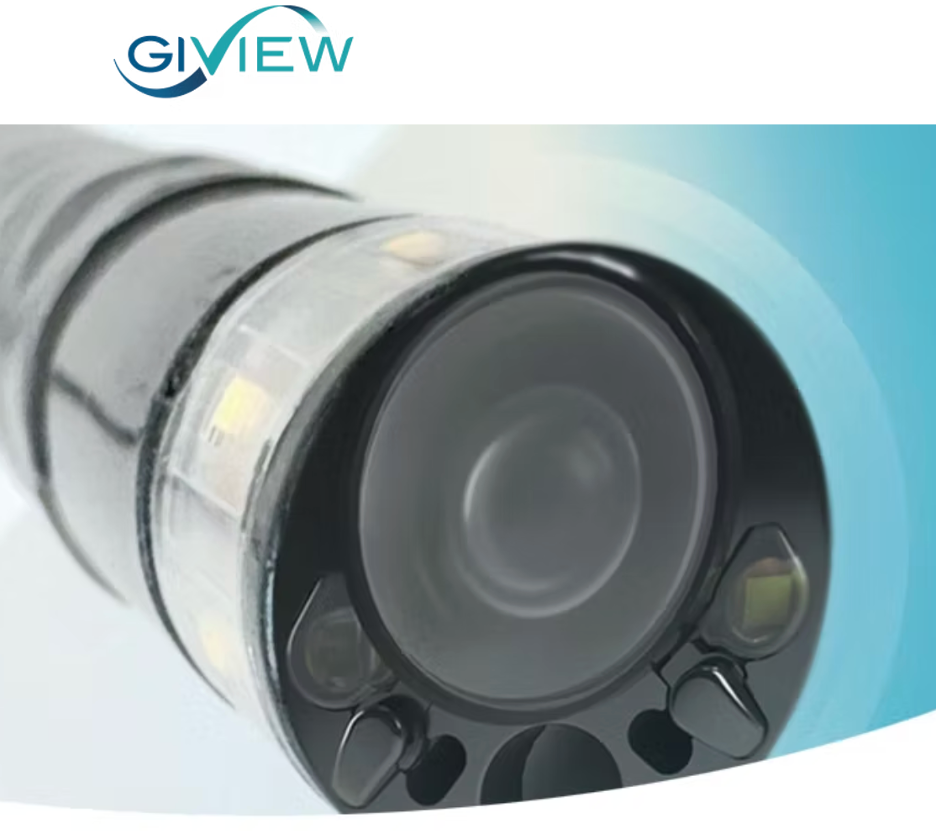
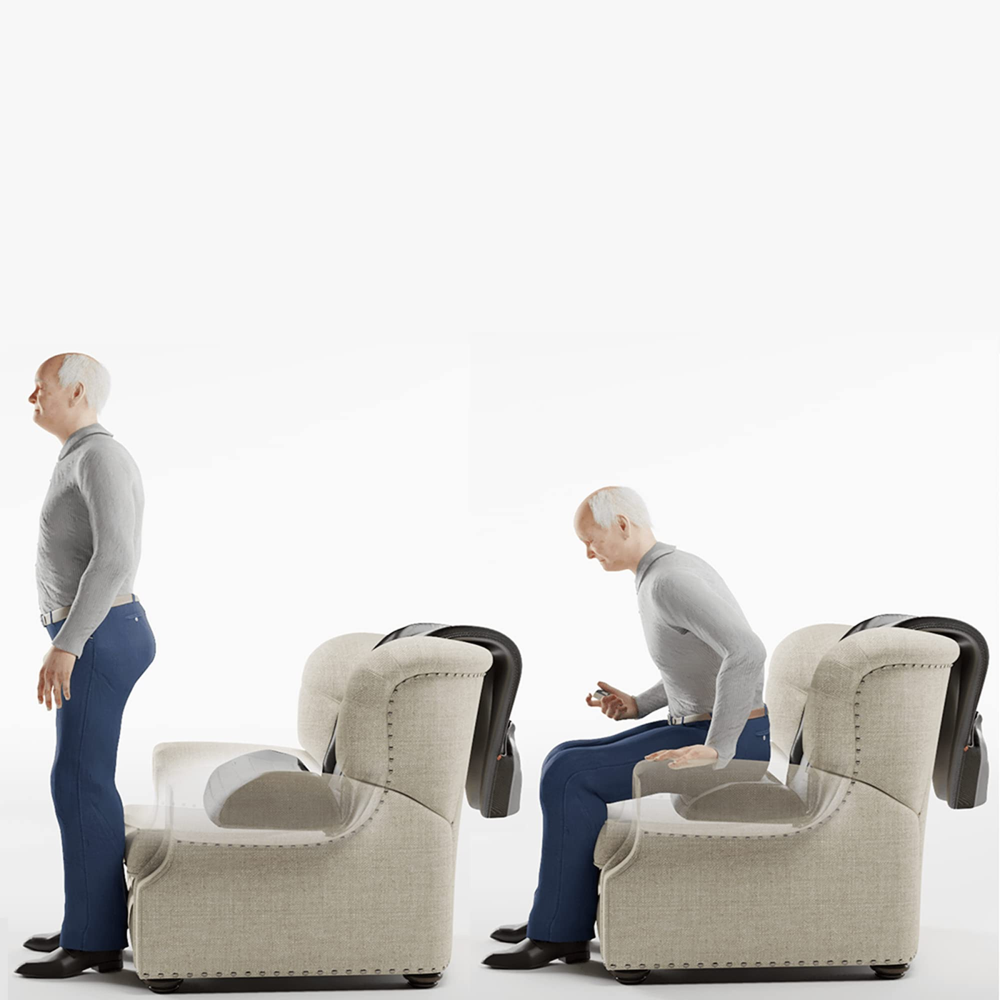
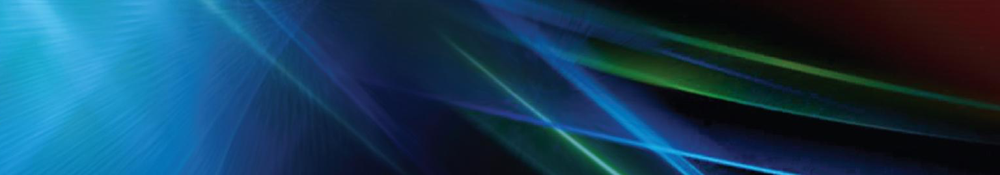

Work
Selected projects.
From a startup building FDA Class II devices with no prior template, to large-company regulated environments and academic research. A record of what I built and what I learned.

GI View · Regulatory · Systems
FDA Approved
Colonoscopy Device — FDA Approval
Taking full ownership of a complex system means holding all of it — not just the piece assigned to you. I owned this device end to end across optics, firmware, and calibration, while simultaneously managing the camera supplier relationship and keeping three FDA programs aligned.
Getting the supplier from unresponsive to weekly in-person collaboration required showing up as a technical peer, not a customer. The device passed FDA approval within approximately one month.
Getting the supplier from unresponsive to weekly in-person collaboration required showing up as a technical peer, not a customer. The device passed FDA approval within approximately one month.
Passed FDA approval in approximately one month.
Full ownership · Vendor management · Cross-functional delivery · FDA compliance

GI View · Engineering · Process
Completed
Manufacturing Yield: 20% → 80%
The production team was optimizing an assembly process that wasn't the real problem. I reframed it: the variability wasn't a people issue or a components issue — it was a process architecture issue. Nobody had scoped it that way before, and nobody had asked me to fix it. I diagnosed it, defined the project, and initiated it from scratch.
From there I owned everything. Defined the requirements and success criteria, designed and prototyped two parallel solutions — a mechanical assembly tool that constrained sensitive components into repeatable positioning, and a software tool that evaluated image quality in real time during assembly, actively directing the assembler toward correct positioning before anything was locked in. Iterated both through months of hands-on testing with the production team. When the tools were validated, I wrote the full production instructions the team would follow going forward.
The result wasn't just a yield improvement. It was a repeatable, documented process where there hadn't been one before.
From there I owned everything. Defined the requirements and success criteria, designed and prototyped two parallel solutions — a mechanical assembly tool that constrained sensitive components into repeatable positioning, and a software tool that evaluated image quality in real time during assembly, actively directing the assembler toward correct positioning before anything was locked in. Iterated both through months of hands-on testing with the production team. When the tools were validated, I wrote the full production instructions the team would follow going forward.
The result wasn't just a yield improvement. It was a repeatable, documented process where there hadn't been one before.
Yield: 20% → 80%, directly accelerating FDA submission capacity.
Root cause reframing · 0→1 project ownership · Hardware design · Process improvement · Cross-functional execution

GI View · Imaging · Algorithms
Completed
Camera Visualization — +90% Quality Improvement
Color accuracy in a colonoscopy camera isn't an aesthetic concern — it directly affects how reliably a physician can identify tissue abnormalities. I made that clinical case visible, got the project approved, and owned it fully from there.
Taught myself color science and sensor physics from scratch — this was the one place it was unavoidable — and worked with an external algorithm consultant to build a per-camera calibration system. Became the company's sole expert on camera, optics, and imaging quality.
Taught myself color science and sensor physics from scratch — this was the one place it was unavoidable — and worked with an external algorithm consultant to build a per-camera calibration system. Became the company's sole expert on camera, optics, and imaging quality.
Passed FDA color requirements. ~90% overall visualization improvement from baseline.
Clinical framing · Influencing without authority · Image processing · Optical systems · MATLAB / Python

GI View · Product Development · 0→1
In Development
Gastroscopy Device — Building from Zero
New product, new clinical use case, nothing inherited. I led the full 0→1 — from physician discovery research through technology decisions, specifications, component sourcing, and vendor management. Spent time in procedure rooms observing clinical workflows across competing devices before making any technical decisions.
The technology direction I chose was justified not just on engineering merit, but on regulatory strategy: the faster, more predictable FDA pathway was a product decision as much as a technical one.
The technology direction I chose was justified not just on engineering merit, but on regulatory strategy: the faster, more predictable FDA pathway was a product decision as much as a technical one.
Full technical and regulatory architecture established from first principles.
0→1 product development · Clinical discovery · Technology decisions · Regulatory strategy

Tel Aviv University · Hardware · Algorithms
Validated
LiDAR Motion Capture — Wearable Assistive Device
Clinical biomechanical assessment typically requires dedicated lab equipment, trained technicians, and expensive motion capture systems. The goal here was to replace all of that with two iPhones and a belt.
I designed and built a complete wearable motion capture system using the LiDAR sensors built into iPhone Pro models — positioning them at the body's center of mass using a custom-designed adjustable belt harness I engineered for stability and comfort during movement. The system tracked sit-to-stand transitions in two axes simultaneously, capturing the full biomechanical signature of the movement.
The technical work spanned hardware and software end to end: calibrated the LiDAR sensors against an Instron testing machine as gold standard, developed custom MATLAB signal processing algorithms to extract movement sections from continuous recordings, and built computational models to quantify stability metrics — area under the curve, velocity, and acceleration of the center of mass. Validated across 12 test subjects and used the system to assess the effectiveness of an assistive mobility device in reducing fall risk during standing transitions.
I designed and built a complete wearable motion capture system using the LiDAR sensors built into iPhone Pro models — positioning them at the body's center of mass using a custom-designed adjustable belt harness I engineered for stability and comfort during movement. The system tracked sit-to-stand transitions in two axes simultaneously, capturing the full biomechanical signature of the movement.
The technical work spanned hardware and software end to end: calibrated the LiDAR sensors against an Instron testing machine as gold standard, developed custom MATLAB signal processing algorithms to extract movement sections from continuous recordings, and built computational models to quantify stability metrics — area under the curve, velocity, and acceleration of the center of mass. Validated across 12 test subjects and used the system to assess the effectiveness of an assistive mobility device in reducing fall risk during standing transitions.
Validated across 12 test subjects against Instron gold standard. Feasibility for clinical deployment established.
Hardware design · Wearable systems · MATLAB · Signal processing · Device validation · Biomechanics
Read full paper →
Hemodialysis device investigation
NxStage Medical · Systems Engineering
Completed
Root Cause Investigation — Class II Hemodialysis Device
Joining an established regulated-environment company mid-investigation meant getting up to speed on a complex multi-physics system fast — mechanical, fluidic, and electronic — and contributing meaningfully before having the full picture.
Ran an 18-variable data analysis to identify the failure mechanism, designed and executed six system-level test protocols, and translated the findings into clear technical and regulatory recommendations for senior leadership. My first exposure to how a large medical device company manages design changes under MDR scrutiny — and how much communication discipline that requires.
Ran an 18-variable data analysis to identify the failure mechanism, designed and executed six system-level test protocols, and translated the findings into clear technical and regulatory recommendations for senior leadership. My first exposure to how a large medical device company manages design changes under MDR scrutiny — and how much communication discipline that requires.
Design modification requirements established. MDR compliance maintained.
Multi-variable analysis · Systems engineering · Test protocol design · Regulatory communication

Tel Aviv University · Leadership
Completed
TAU MedTech Hackathon — Healthcare Innovation Ecosystem
Translating real clinical problems into challenges engineers can actually solve is a product skill. I co-organized a healthcare innovation competition — 18 teams, ~200 participants, sponsored by Amazon, Google, Microsoft, Philips, Teva, and IBM — and that translation was the core of the work.
Established partnerships with major medical institutions, structured unmet clinical needs into actionable engineering briefs, and negotiated data access agreements. Built the infrastructure for a cross-institutional ecosystem from scratch. The same initiative continues today as Synergy Innovate (formerly TAU MedTech), Tel Aviv University's medical entrepreneurship center.
Established partnerships with major medical institutions, structured unmet clinical needs into actionable engineering briefs, and negotiated data access agreements. Built the infrastructure for a cross-institutional ecosystem from scratch. The same initiative continues today as Synergy Innovate (formerly TAU MedTech), Tel Aviv University's medical entrepreneurship center.
Built a cross-institutional healthcare innovation ecosystem from scratch.
Ecosystem building · Clinical translation · Strategic partnerships · Event leadership
Synergy Innovate — organization site →

Tel Aviv University · Imaging · ML
Academic
Cell Migration Analysis — Image Processing Pipeline
Quantifying how cells change shape over time as they respond to a stimulus sounds straightforward until you try to do it systematically across hundreds of images. I built an automated pipeline in MATLAB — segmentation, contrast correction, background normalization, and denoising — that removed manual measurement from the process entirely and enabled consistent morphological tracking across timepoints.
A contained project, but a clear example of how I approach analytical problems: define what you're measuring, build the tool, remove the variability.
A contained project, but a clear example of how I approach analytical problems: define what you're measuring, build the tool, remove the variability.
Automated cell morphology quantification across exposure timepoints.
MATLAB · Image segmentation · Cell biology · Signal processing
Full presentation slides →

Tel Aviv University · Computer vision · Lab
Academic
Eulerian Video Magnification — Amplifying Subtle Motion in Video
Laboratory project on Eulerian video magnification: amplifying tiny temporal changes in ordinary video—pulse, respiration, small displacements—without special sensors, by combining spatial and bandpass temporal filtering. Covered algorithm choices, parameter sensitivity, and validation on controlled sequences.
Documented methodology, results, and limitations in a full technical lab report.
Documented methodology, results, and limitations in a full technical lab report.
End-to-end EV M implementation with written lab report and validation narrative.
Video analysis · Signal processing · MATLAB · Scientific reporting
Lab report (PDF) →

Tel Aviv University · Physiology · Instrumentation
Academic
Pulmonary Function Lab — Spirometry & Flow–Volume Curves
Hands-on pulmonary function lab: spirometry, flow–volume loops, and interpretation of standard respiratory metrics in a reproducible protocol. Emphasis on connecting physiology to instrument outputs, consistency of maneuvers, and clear comparison of results to expected clinical patterns.
Findings and analysis are documented in a joint lab report.
Findings and analysis are documented in a joint lab report.
Completed spirometry study with full written report and curve interpretation.
Physiology · Experimental protocol · Data interpretation · Technical writing
Lab report (PDF) →

Tel Aviv University · Materials · Biomedical textiles
Academic
Thermal Conductivity of Fabrics & Dressings — Heat-Flow Meter
Measured thermal conductivity of fabric materials and wound dressings with a heat-flow meter under defined conditions, including humidity as a variable that matters for wear comfort and heat transfer at the skin interface. Connects bench materials testing to the kind of tradeoffs that show up in medical textiles—barrier layers, absorbency, and how heat moves away from tissue.
Full write-up available as PDF; the original manuscript is also provided in DOCX.
Full write-up available as PDF; the original manuscript is also provided in DOCX.
Completed humidity-aware thermal characterization with full written study.
Materials testing · Heat transfer · Experimental design · Technical writing
Full paper (PDF) →
Manuscript (DOCX) →

Northeastern · MS Bioengineering · Ultrasound
Master's
Wearable Ultrasound for Rotator Cuff Rehab — R21-Style Proposal
PM&R specialists lack a repeatable way to quantify shoulder rehab progress: conventional ultrasound depends heavily on operator skill, probe pressure, gel, and still patients, so longitudinal comparisons across visits and clinicians break down.
This NIH-style R21 proposal frames a wearable, wired multi-patch system integrated with a shoulder brace—anchored in published conformable ultrasound patch work—to stabilize coupling, capture anatomy during dynamic motion in therapy, and validate mechanical and biocompatibility milestones before clinical translation. The narrative includes an aspirational track toward MIT ultrasound patch technology as stated future direction (proposal language, not a completed collaboration). The document lays out concrete aims: finalize patch mechanics for brace use, animal biocompatibility, and traditional-US mapping of optimal patch placement and arm positions for cuff imaging.
This NIH-style R21 proposal frames a wearable, wired multi-patch system integrated with a shoulder brace—anchored in published conformable ultrasound patch work—to stabilize coupling, capture anatomy during dynamic motion in therapy, and validate mechanical and biocompatibility milestones before clinical translation. The narrative includes an aspirational track toward MIT ultrasound patch technology as stated future direction (proposal language, not a completed collaboration). The document lays out concrete aims: finalize patch mechanics for brace use, animal biocompatibility, and traditional-US mapping of optimal patch placement and arm positions for cuff imaging.
Structured research strategy linking clinical need, patch innovation, and a staged validation plan.
Clinical problem framing · Ultrasound imaging · Wearable integration · Research design · Scientific writing
Research proposal (DOCX) →
Group presentation (PPTX) →

Northeastern · MS Bioengineering · Digital health
Master's
Smart Stethoscopes — From Acoustics to AI-Assisted Auscultation
Analog auscultation still dominates exam rooms, but sensor-rich “smart” scopes are reshaping what’s possible: noise reduction, multi-modal sensing (e.g. ECG alongside phonocardiography), and faster triage with on-device or cloud analytics.
For BIOE 5810, our team traced that arc from early binaural designs through modern platforms (e.g. Eko-class devices), catalogued limitations of conventional scopes, and articulated how digitization and AI change the clinical value proposition—immediate capture, richer waveforms, and routes toward quicker detection when paired with decision support.
For BIOE 5810, our team traced that arc from early binaural designs through modern platforms (e.g. Eko-class devices), catalogued limitations of conventional scopes, and articulated how digitization and AI change the clinical value proposition—immediate capture, richer waveforms, and routes toward quicker detection when paired with decision support.
Landscape analysis connecting device evolution, technical differentiators, and clinical impact.
Digital health · Medtech landscaping · Team synthesis · Technical communication
Final presentation (PPTX) →

Northeastern · MS Bioengineering · Regulatory
Master's
Hazard Hue — Disposable Glove With Puncture-Indicating Color Change
Hazard Hue is a concept for a disposable medical glove engineered to provide an immediate visual cue when the barrier is breached—reducing needlestick and contamination uncertainty in high-risk procedural settings. Translating that idea into something a regulator can evaluate means design inputs, risk management, verification thinking, and market-access planning in one coherent thread.
For BIOE 5250, our team produced a full design-plan–style package: device description, design and development overview, design inputs and outputs, linked risk management and V&V, manufacturing and quality strategy, and multi-region regulatory submission paths (EU MDR including country specifics, US, UK, Brazil, Turkey, and post-market surveillance). Supporting material includes GSPR-style mappings, verification procedure scaffolding, and DHF-oriented structure—all as an academic regulatory-systems exercise for a novel safety-oriented barrier device concept.
For BIOE 5250, our team produced a full design-plan–style package: device description, design and development overview, design inputs and outputs, linked risk management and V&V, manufacturing and quality strategy, and multi-region regulatory submission paths (EU MDR including country specifics, US, UK, Brazil, Turkey, and post-market surveillance). Supporting material includes GSPR-style mappings, verification procedure scaffolding, and DHF-oriented structure—all as an academic regulatory-systems exercise for a novel safety-oriented barrier device concept.
End-to-end design and regulatory documentation framework for a novel safety-oriented wearable.
Design controls · ISO 14971 · MDR / FDA pathways · DHF · Team delivery
Full regulatory & design document (DOCX) →
Project presentation (PPTX) →